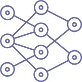
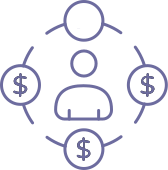

Fractional or full-time Chief of Staff, embedded with leadership teams and operating across functions and stakeholders, focused on leverage rather than headcount.
I step in where coordination, risk, or execution becomes a bottleneck.